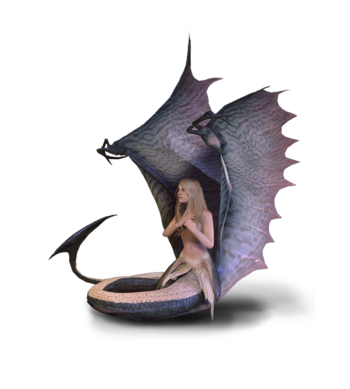

Gryf

Gryf - zwany także Inogiem; uskrzydlony lew o głowie i szponach orła.
Mieszka wśród szczytów gór, rozmnaża się jak ptaki - składa jaja.
Żywi się dużymi zwierzętami takimi jak bydło.
HARPIA

Harpia - potwór, drapieżny ptak, o twarzy kobiety. Zamieszkuje głównie tereny górzyste. Atakuje w grupach, rozszarpuje swoje ofiary.
Sukkub

Sukkub - demon pod postacią pięknej kobiety, o bardzo długich włosach, często ciemnych (często obdarzonych również atrybutami charakterystycznymi dla demonów, np. rogami albo kopytami) .
Jej pojawieniu się towarzyszy ostry zapach siarki.
Demon żywi się siłami witalnymi mężczyzn, wybiera najurodziwszych.
Ma ze sobą bicz albo sztylet.
Syrena

Syreny (zwane przez mieszkańców wysp Skellige Havfrue) – kobiety o ludzkim ciele z ogonem ryby.